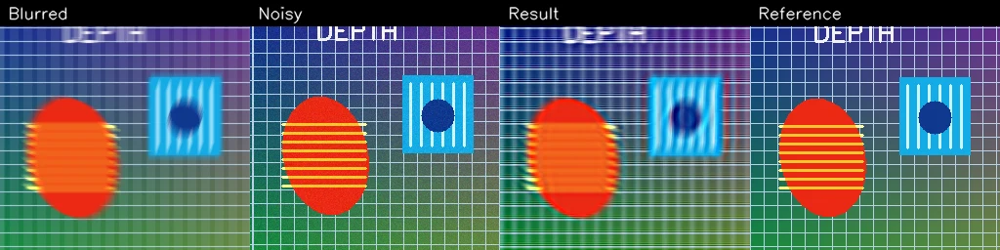

Derived GOPRO_Large Flower
- PSNR
- 26.3248
- SSIM
- 0.8998
- Objective (full-resolution)
- 0.713320
2013 paper record · 2026 reference reconstruction
A framework-free public gallery for a disparity-guided regional restoration reference implementation. Each comparison is ordered blurred, noisy auxiliary, restored, then optional reference.
The preserved 2013 paper and historical 2009–2011 README figures are research records. The 2026 Python package is a reproducible modern reference reconstruction, not the exact deleted original implementation and not bit-identical to historical outputs.

Metrics and selected HPO configurations are from the committed public benchmark manifest output. They are measurements of this reference reconstruction.
uv sync
uv run disparity-deblur-benchmark \
--manifest benchmarks/manifests/public.json \
--dataset-root benchmarks/public-assets \
--output-dir output/showcase